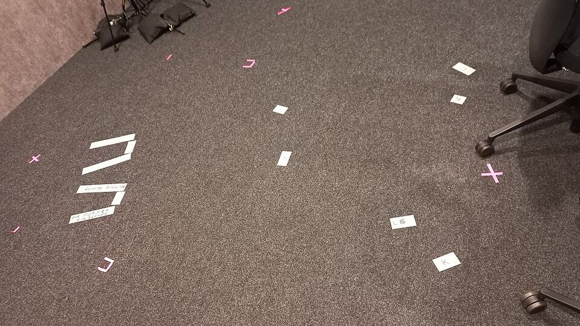

Charlie Brooker'ın yeni dizisi Blackmere'den ilk kareler

Görsel: Dornbirn-ORF Vorarlberg-Television studio-recording studio-13ASD · Asurnipal · CC BY-SA 4.0 · Wikimedia Commons
Black Mirror'un yaratıcısı Charlie Brooker'ın yeni Netflix dizisi Blackmere'den ilk kareler 24 Eylül 2026'da paylaşıldı. Dizi, ortağının ölümünün hesabını sorarken bir seri katilin peşine düşen Dedektif John Blackmere'i anlatıyor. Yapım 2027'nin ilk aylarında yayına girecek; kesin tarih henüz açıklanmadı.
Blackmere dizisinde ne oldu, ilk görseller neyi gösteriyor?
Netflix, projenin adını ve ilk tanıtım görsellerini 24 Eylül 2026'da duyurdu. Chortle ve The A.V. Club aynı tarihi veriyor. Karelerde Paddy Considine'in canlandırdığı dedektif, yağmurlu bir kuzey İngiltere kentinde cinayet soruşturmasının ortasında görünüyor.
Netflix'in tanıtımına göre yapım, türün kalıplarını fazlasıyla ciddi biçimde taklit eden bir polisiye gerilim görüntüsü altında komedi yapıyor. Hikâyede Blackmere, ortağının ölümünün hesabını sorarken ritüel düzeni olan bir seri katilin izini sürüyor ve soruşturma onu Londra'ya taşıyor.
Yönetmen koltuğunda Al Campbell var. Dizi, Brooker ile Annabel Jones'un kurduğu Broke and Bones şirketi tarafından üretiliyor. Senaryo ekibinde Brooker'ın yanında Ben Caudell, Jason Hazeley, Emer Kenny, Daniel Maier ve Joel Morris bulunuyor.
Netflix'in Tudum sayfasına göre yapımın yürütücü prodüktörleri Jessica Rhoades ve Annabel Jones. Mark Kinsella ortak prodüktör, Richard Webb ise prodüktör olarak görev alıyor. Senaryoya Victoria Asare Archer de ek malzemeyle katkı verdi.
Blackmere dizisi neden bu kadar arandı?
Birinci neden isim benzerliği. Blackmere, kulağa Black Mirror'a yakın geldiği için okurların bir bölümü bunu yeni bir Black Mirror halkası sandı. İki yapım birbirinden bağımsız; Blackmere teknoloji distopyası değil, polisiye parodisi.
İkinci neden kadro. Paddy Considine, Lena Headey, Georgina Campbell ve Rory Kinnear'ın aynı projede buluşması İngiliz dizi izleyicisinde ilgi uyandırdı. Kinnear'ın kadroya katıldığı haberi, ilk görsellerle aynı gün duyuruldu.
Üçüncü neden Brooker'ın geçmişi. Yazarın 2012'de imza attığı polisiye parodisi A Touch of Cloth, yeni dizinin tonu için en yakın referans sayılıyor. Chortle, iki yapımın yazar kadrosu arasında bağ bulunduğunu belirtiyor.
Blackmere dizisinde bilinenler ve henüz bilinmeyenler neler?
Bilinenler arasında platform, yaratıcı, yönetmen, yapım şirketi ve ana kadro var. Yan rollerde Abbie Murphy, Maximilian Osinski, Nadia Albina ve Endy McKay yer alıyor. Çekimler, kurmaca kuzey İngiltere kenti Bleakford ile Londra'da geçiyor.
Bölüm sayısında kaynaklar ayrışıyor. Netflix'in Tudum sayfası diziyi yedi bölüm olarak duyuruyor, Chortle ise altı bölüm diyor. Netflix'ten bu farkı gideren ek bir açıklama henüz gelmedi.
Henüz açıklanmayanların listesi uzun: kesin yayın tarihi, fragmanın ne zaman geleceği ve yan oyuncuların canlandırdığı karakterler. Rory Kinnear, Lena Headey ve Georgina Campbell'ın rolleri de henüz açıklanmadı. Türkiye için altyazı ve dublaj seçenekleri hakkında bilgi verilmedi.
Blackmere dizisi için sırada ne var?
Netflix genellikle kesin yayın tarihini ilk fragmanla birlikte duyuruyor. Dizinin 2027'nin ilk aylarında ekrana gelmesi bekleniyor; takvimin netleşmesi için platformun resmî duyuru kanalları izlenebilir.
Aynı dönemde Brooker'ın asıl serisi de gündemde. Chortle, Black Mirror'un sekizinci sezonuyla Netflix'e döneceğini aktarıyor. İki yapımın yayın takviminin nasıl sıralanacağı henüz açıklanmadı.
Blackmere adının yazımı Black Mirror'a yakın olduğu için iki yapım arama sonuçlarında sık sık yan yana çıkıyor. Netflix Türkiye'nin dizi için ayrı bir tanıtım takvimi açıklayıp açıklamayacağı da henüz bilinmiyor.
“Lütfen dizimi izleyin. Yalvarıyorum.”
— Charlie Brooker, The A.V. Club aktarımı, 3 Ekim 2026
Takip etmek için
- Netflix'in kendi yayını Tudum (netflix.com/tudum): kadro, fragman ve tarih duyuruları burada çıkıyor.
- What's on Netflix (whats-on-netflix.com): kadro eklemeleri ve yayın penceresi güncellemelerini takip ediyor.
- Chortle (chortle.co.uk): İngiliz komedi yapımlarına odaklandığı için Brooker'la ilgili haberleri ayrıntılı veriyor.
Sık sorulan sorular
Blackmere dizisi ne zaman yayınlanacak?
Netflix, diziyi 2027'nin ilk aylarında yayına almayı planlıyor. Gün ve ay bilgisi henüz açıklanmadı.
Blackmere, Black Mirror'un yeni sezonu mu?
Değil. Blackmere bağımsız bir polisiye komedi dizisi. Black Mirror ise ayrı bir yapım olarak sekizinci sezonuyla devam edecek.
Blackmere'de kimler oynuyor?
Başrolde Paddy Considine var. Kadroda Georgina Campbell, Lena Headey ve Rory Kinnear da yer alıyor; yan rollerde Abbie Murphy ve Maximilian Osinski bulunuyor.
Olgular şu yayıncıların haberlerinden derlendi: Netflix Tudum, What's on Netflix, Chortle, The A.V. Club. Metnin tamamı TrendSaphiens tarafından yazıldı; kaynaklarla kelime örtüşmesi %0.0 (eşik %5). Kaynaklarda olmayan bilgi eklenmedi.